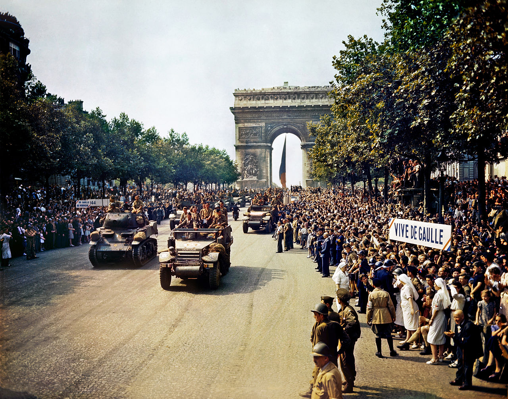
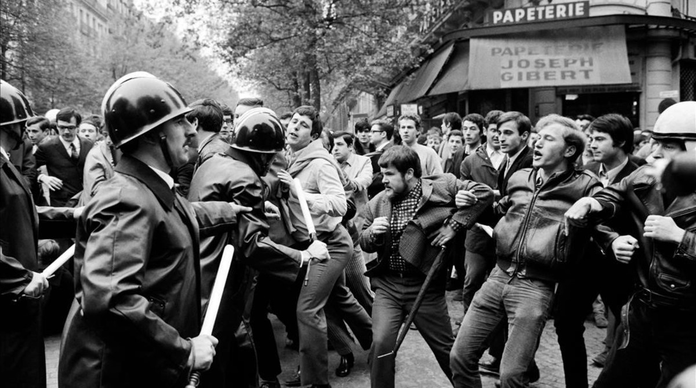
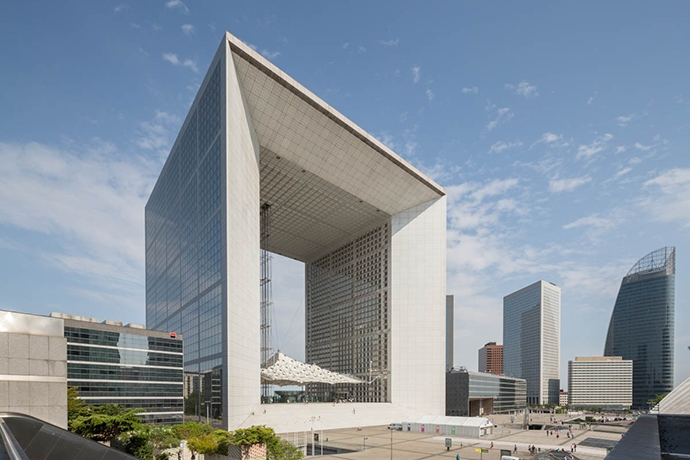
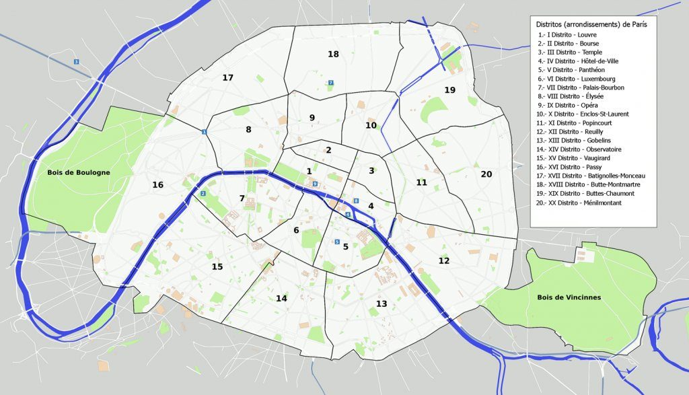
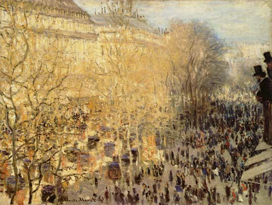
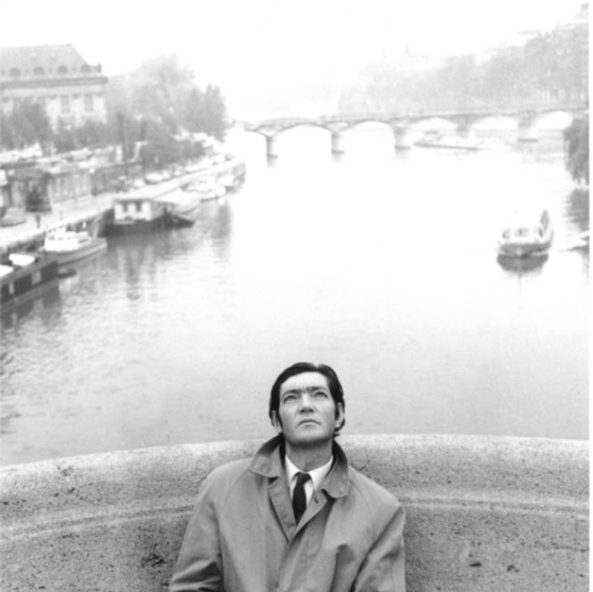

París en el siglo XX
El siglo XX se inició con la inauguración de la primera línea del Metro de París, cuyas obras habían empezado en 1898. En 1900 se desarrolló otra Exposición Universal, la más notable de París, para la cual se construyeron obras notables de arquitectura que todavía siguen en pie, tales como el Grand Palais, el Petit Palais, la Estación y ahora Museo de Orsay, el Puente Alejandro III y la Estación de Lyon.

En 1940 la ciudad fue conquistada por la Wehrmacht (ejército de la Alemania Nazi) en el marco de la Segunda Guerra Mundial. París estuvo administrada por las fuerzas de ocupación, que la abandonaron después de cuatro años sin causarle destrozos de consideración, en comparación con los daños sufridos en otras ciudades europeas en esa guerra. Para los aliados, París no era una plaza de importancia estratégica y por ello preferían eludir la liberación de París ya que su objetivo era traspasar pronto el Rin. Sin embargo, el general De Gaulle consiguió convencerlos de la necesidad de liberar París ante el temor de que un régimen comunista se instaurara en la república si la resistencia vencía a los alemanes. Tras la liberación, las parisinas sospechosas de colaborar con los alemanes fueron humilladas y rasuradas.
Durante los mandatos del general De Gaulle de 1958 a 1969, varios acontecimientos políticos tuvieron lugar en la capital. En 1961, una manifestación en favor de la independencia de Argelia fue violentamente reprimida. En 1968, un movimiento estudiantil iniciado en la Universidad de Nanterre desencadena más de un mes de protestas y huelgas al unirse con un amplío movimiento social de reivindicaciones: es el mayo francés.

El 13 de mayo, cientos de miles de personas protestaban contra la violencia policial. Después de dos meses de agitación y disturbios, los franceses votaron a favor del general De Gaulle en las elecciones legislativas de junio y volvió la calma parcialmente.

Bajo la administración del presidente François Mitterrand, en la década de 1980 y comienzos de los 90, la ciudad recibió un renovado impulso en su urbanismo e infraestructura. Se renovaron sectores deprimidos de la ciudad, particularmente en barrios de la ribera izquierda y en el barrio de La Villette; se levantaron nuevos edificios emblemáticos como la nueva biblioteca nacional, el Arche de la Défense y el Musée d'Orsay; y se renovaron los accesos al Museo del Louvre.
Geografía
París está situado en el norte de Francia, en el centro de la cuenca parisina. La ciudad es atravesada por el río Sena. En el centro de la ciudad destacan dos islas que constituyen su parte más antigua, Île Saint-Louis y la Isla de la Cité. En general, la ciudad es relativamente plana, y la altitud más baja es de 35 metros sobre el nivel del mar. Alrededor del centro de París destacan varias colinas, siendo la más alta Montmartre con 130 metros.

La última gran modificación del área de París ocurrió en 1860. Además de la anexión de arrabales periféricos y de darle su forma moderna, en esta modificación se crearon veinte arrondissements (distritos municipales), dispuestos en forma de espiral y siguiendo el sentido de las agujas del reloj. De los 78 km² que abarcaba París en 1860, la ciudad se amplió a hasta los 86,9 km² en la década de 1920. En 1929 los parques forestales bosque de Boulogne y bosque de Vincennes se anexaron oficialmente a la ciudad, lo que conformó su área actual de 105,4 km².
El área urbana se extiende mucho más allá de los límites de la ciudad, con extensiones de crecimiento urbano a lo largo de los ríos Sena y Marne hacia el sudeste y este, así como a lo largo del Sena y del río Oise al noroeste y norte. Más allá de los principales suburbios, la densidad de población desciende bruscamente: una mezcla de bosques y de zonas agrícolas con una serie de ciudades satélites distribuidas de manera dispersa y relativamente uniforme. Esta corona urbana, cuando se combina con la aglomeración de París, completa el área urbana de París, que abarca un óvalo 14 518 km², un área cerca de 138 veces mayor que la de París.
Clima
El clima de París es oceánico semicontinental (también denominado «clima de transición») al encontrarse alejada de la costa. Las precipitaciones son algo abundantes aunque no excesivas, con una media de aproximadamente 636 mm y están repartidas a lo largo de todo el año de forma regular sin tener un destacado mínimo pluviométrico (es decir, una estación seca).
Las temperaturas en verano pueden superar los 30 °C ocasionalmente, aunque rara vez se superan los 35 °C; las temperaturas máximas suelen rondar entre los 25 °C y 30 °C y son frecuentes las tormentas. La primavera y el primer mes del otoño son suaves, con abundantes días de lluvia. Durante gran parte del otoño y en todo el invierno reina el frío.
En algunos meses (sobre todo en diciembre, enero y febrero) el frío se da de manera intensa, con temperaturas que apenas superan los 7 grados de máxima y mínimas que muchas veces no llegan a 0 grados.
Datos de Interés
| París | |
|---|---|
| País | Francia |
| Entidad | Capital de Francia |
| Región | Isla de Francia |
| Alcaldesa | Anne Hidalgo |
| Superficie | 105,4 km² |
| Altitud | |
| Máxima | 130 m s. n. m. |
| Mínima | 28 m s. n. m. |
| Población | |
| Total | 2 206 488 hab. |
| Densidad | 21 258 hab/km² |
| Clima | Oceánico |
Cultura
París ha sido un centro cultural y artístico relevante en la historia occidental. En ella nacieron, se formaron o desarrollaron sus carreras figuras francesas de la talla de René Descartes, Molière, Voltaire, Victor Hugo, Émile Zola, Alexandre Dumas, hijo, Edgar Degas y Claude Monet entre otros.

Desde comienzos del siglo XIX y hasta finales de la década de 1960, París fue el centro mundial del arte.Este periodo recibió su brillo de emblemáticos representantes del arte francés como Braque, Duchamp o Matisse y varios artistas extranjeros como Beckett, Brancusi, Bertolt Brecht Buñuel, Hemingway, Joyce, Kandinsky, Mondrian, Picasso y Stravinski.
En esta época hubo un progresivo desplazamiento de los centros creativos por diferentes barrios de la ciudad: desde Montmartre, cuna del cubismo, a Montparnasse, escenario de la bohemia de entreguerras y del surrealismo, hasta Saint-Germain-des-Prés, centro del movimiento existencialista asociado con Jean-Paul Sartre, y finalmente al Barrio Latino, escenario del Mayo francés. Todos estos núcleos conservan su preeminencia dentro de la vida cultural de la ciudad.

Muchos son los autores que han desarrollado sus historias teniendo a la capital francesa como escenario. Tal es el caso de Trópico de Cáncer (1934) de Henry Miller, Rayuela (1963) de Julio Cortázar y París era una fiesta (1964) de Ernest Hemingway.
Además, la ciudad cuenta con el mayor contenido de obras de arte, distribuido en sus numerosos museos y colecciones privadas.